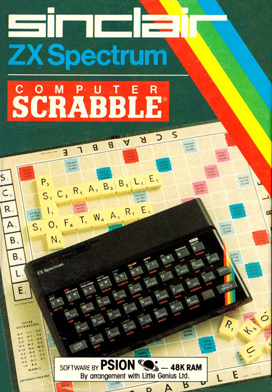

LOAD " "
LOAD " "

Computer ScrabbleComputer Scrabble never got a CRASH review, we do however have this short snippet from CRASH issue 4 in a section called Oldies.
It may seem a lot of money to pay out, but if you enjoy playing Scrabble, you'll love the Spectrum version — even if you don't like Scrabble, you'll love the Spectrum version There's no denying that this is a fabulous program. It allows you to do anything at all you would do in real Scrabble, and if you're playing against the computer it allows you to cheat — but you wouldn't do that, would you? Graphics display is crystal clear; your tile rack can be Juggled to make up words, the computer tells you what your word will score and let's you take it back if you think you can do better. Up to lour players, the computer may be one or all of them You can select to see the computer 'thinking' if you wish. Only one failing, the Spectrum seems to get away with some rather odd two-letter words — and you can't challenge its 11,000 word vocabulary. Highly recommended.

{kind=link}